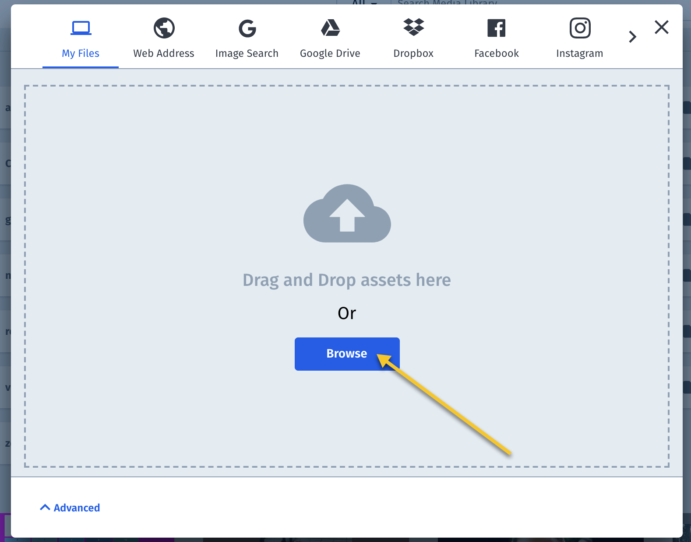

"Pixel" is short for "Picture Element" and is the unit of measure for images. Resizing always involves adding or
removing
pixels.
Image Dimensions
Images are two dimensional. When resizing images, we reference the height and
width of an image Height is equivalent to a verticle measure, and Width is equivalent to a
horizontal measure. Width and height are measured in pixels.
Aspect Ratio
Aspect ratio, abbreviated as AR is a measure of width :
height. A square image has an AR = 1, a image displayed on a mobile device
usually has an AR < 1, and a desktop image usually has an AR > 1.
Scale
In the context of resizing an image, scale refers to changing the dimensions of the image. This means changing
either or both width and height. When you change width and height such that the AR is not maintained you may skew
the image which means that it will looked stretched and is usually not desirable.
Crop
When you crop an image you a selecting a portion of it to keep and throwing away the rest. In addition to
specifying width and height, you also need to specify what position to start the crop or a focal point around
which to center the cut.
Compress
Image compression refers to removing pixels. There are algorithms that can remove pixels in an intelligent way
so that image quality is not effect. This is an important optimization for images on the web.
Bounding Box
When 2 dimensions are specified in a crop, the focal point is by default the center of the 2 dimensions. The
term gravity is used to specify an option that sets this focus. While gravity is the center by
default, we can specify a compass direction or, using built in artificial intelligence, specify that gravity
should focus on a face.
Resizing the Image
We're using Cloudinary to resize images. All of the commands will appear in the URL of the image.
Sometimes we want to make an image smaller and sometimes we want to make it larger. To handle these 2 cases, we'll
demonstrate resizing on 2 images that look the same. Both have an AR = 1 and appear as square, but one is 1300 x
1300 and the other is 400 x 400. You can see that the image is a grid of colors in the share of blue. Each cell of
the grid has a number from 1 to 30, except cell 17 which has a face. The numbers will help to identify what got
cropped, if cropping was called for. The image we'll be using in examples is shown below.
AR = 1, Height="
We'll also show use an image that is 1400 x 700. This will help to see transformations on an image with a 2:1 AR.
At the end of this cheatsheet are instructions for using Cloudinary to upload your own image so you can try out the
resizing.
Working with Cloudinary
Cloudinary is a cloud service for uploading, managing and delivering media assets. Cloudinay transformations are
creating
by requesting a URL containing a set of options specified in the URL.
You can construct a new URL or modify and existing one. In the URL below, you would need to add your CLOUD_NAME, a
TRANSFORMATION
that contains resizing instructions, and a PUBLI_ID which is the unique name of you asset in Cloudinary.
You can create a CLOUD_NAME or Cloudinary will create one for you when you reigster
for a free account. You can
create the PUBLIC_ID for an asset when you upload your image to Cloudinary will create
one for you.
This Cheatsheet will help you create a resizing TRANSFORMATION based on your
needs.
Common Use Cases
We'll tag each resizing use case with some common criteria:
ExactExact measurement in result. Some resizing results in fitting within a
bounding
box while others result in exact sizes.
GravityGravity is used to provide focus for a crop
You can create a free account on Cloudinary.
You will be assigned a CLOUD_NAME when you register. You can edit it to choose your own name. Remeber this name will
be public and used in a URL so it's best to use lowercase alphanumeric characters separated by - and
_. Before you can create a Transformation, you need to upload the image you want to resize.
Upload An Image
Uploading images is a multi step process that you can begin by logging in to your account.
To upload an image so that you can begin using transformations, you need to navigate to the Media
Library.
Once in the Media Library, locate the Upload Button and click on it to open the Upload Widget.
For this example, we'll name the asset by providing our own PUBLIC_ID. You enter your own public id before you
select the image to upload. Locate and click on the Advanced link to open up a place to enter the
public id.
In this example, the public id will be assigned my-image. The PUBLIC_ID will appear in the URL so
use lowercase alphanumeric separated by - and _ as you did with your personal
filename.
For this example, you'll upload an image from your local file directory. To do this, click on the browse button
and locate an image to upload.

Once you've selected an image the upload process should be begin. When it's done, you'll be taken back to the
Media Library where you'll see your new image.
You're ready use your new image in a web page and to apply transformations to it.